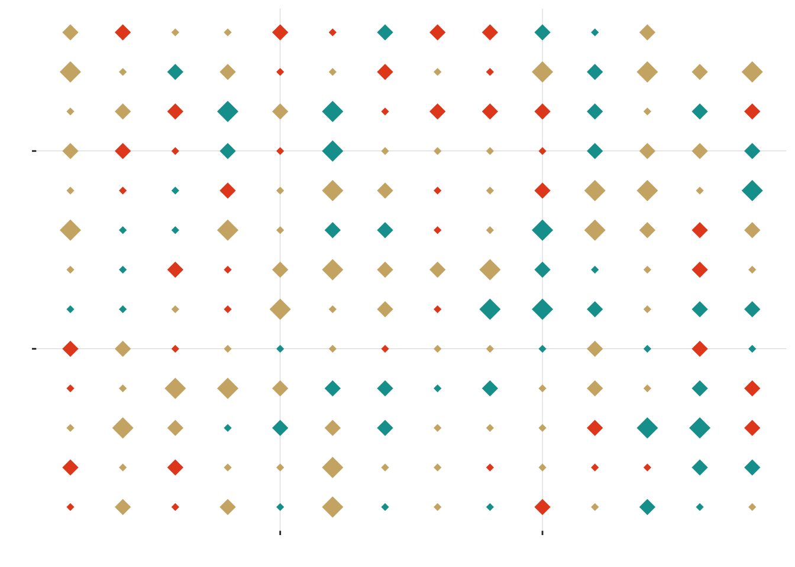
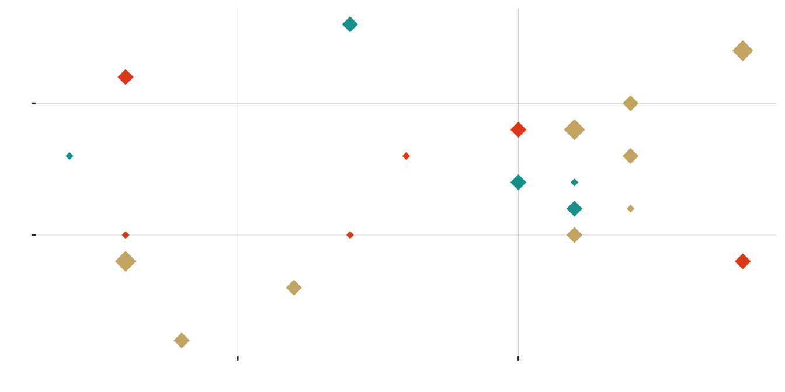
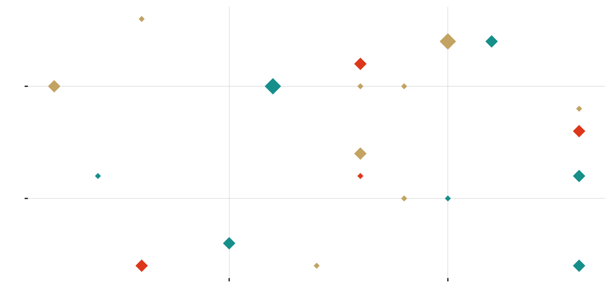
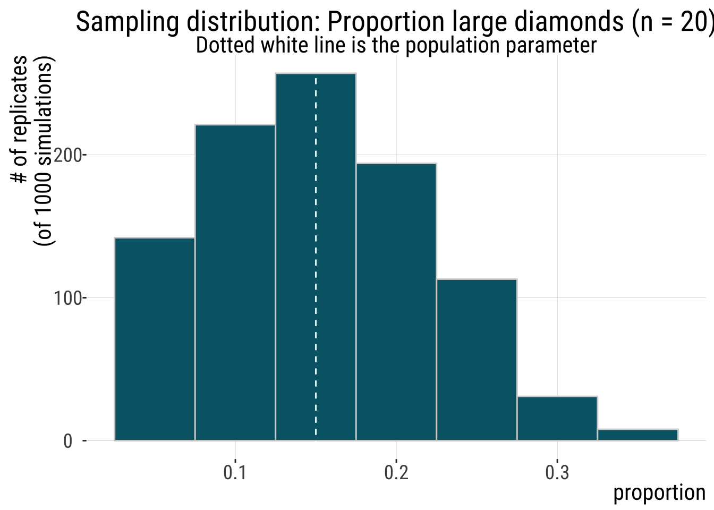
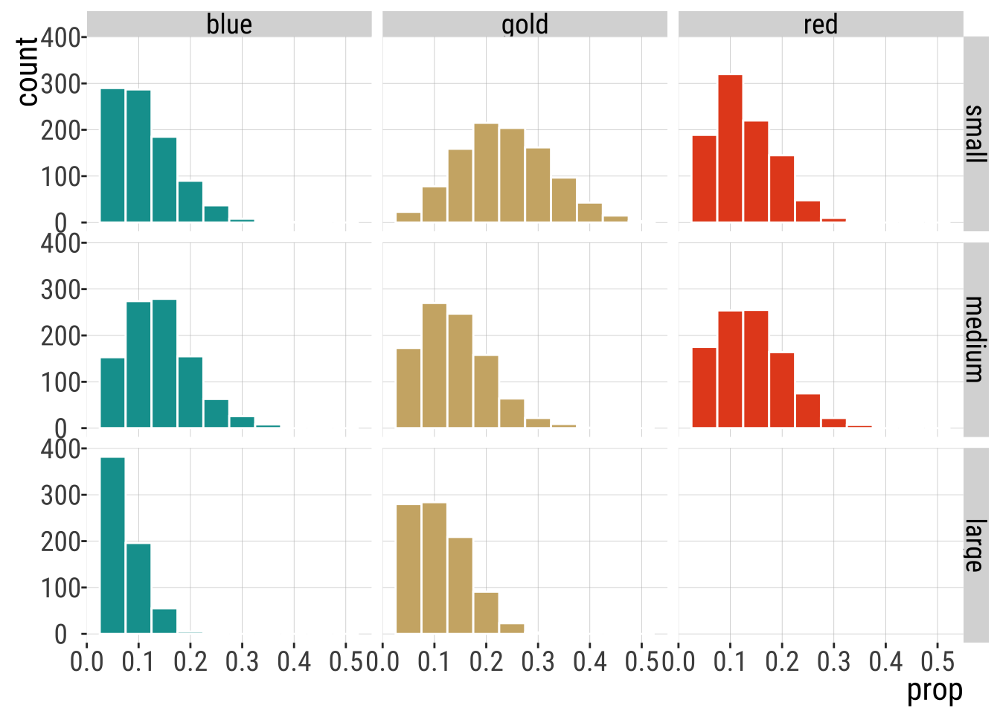
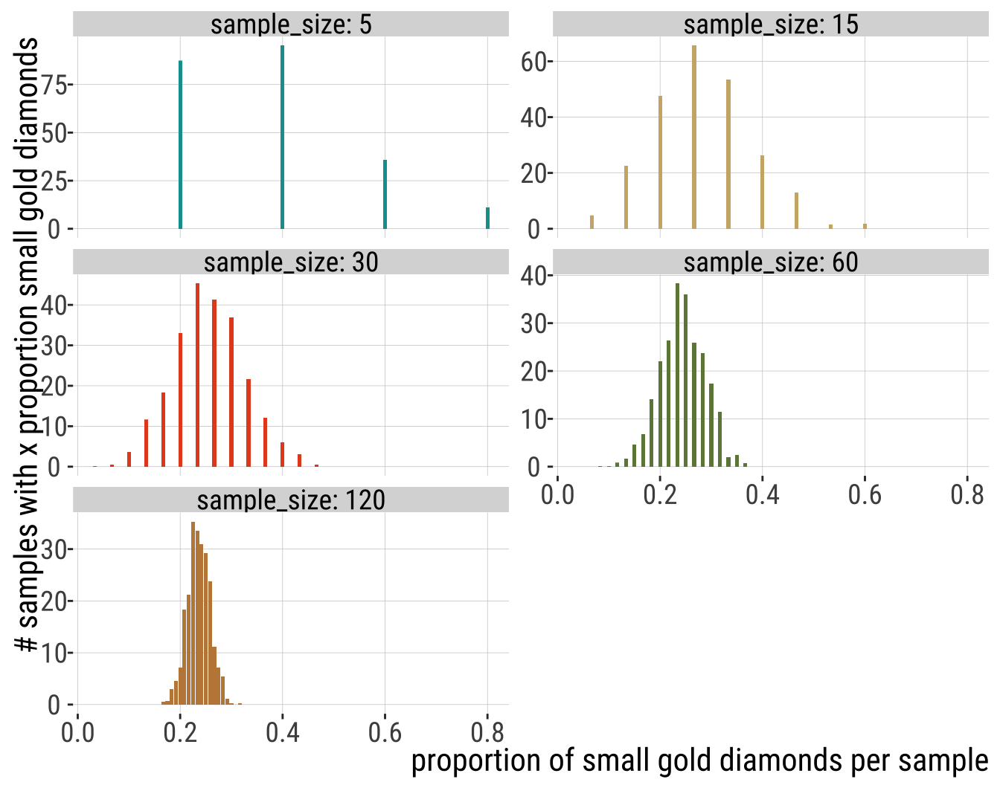
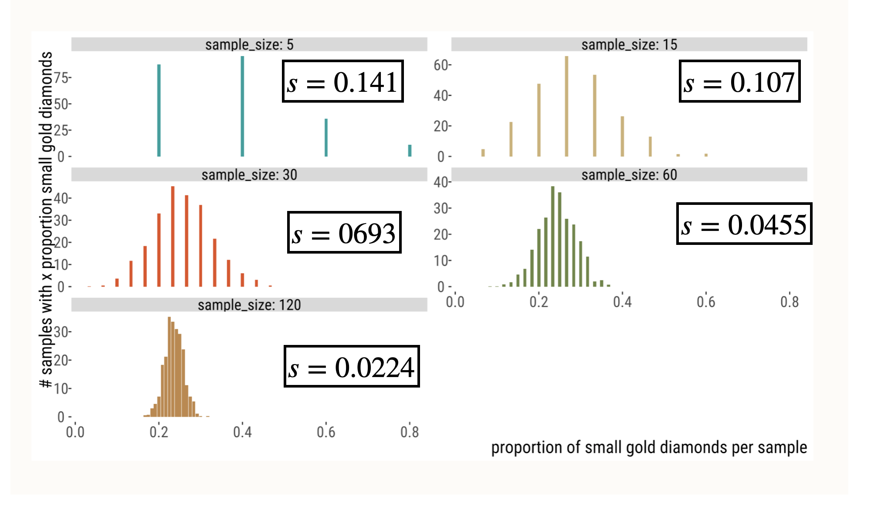
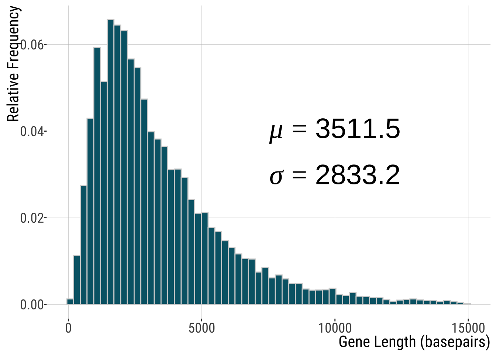

Warning: Using size for a discrete variable is not advised.
Estimation
Sampling - what’s the point?
Getting a feel for sampling
The sampling distribution
Pseudo-replication
Standard error
Standard error of the mean
Confidence intervals
CI of the mean
Error bars - common mistakes
Sets of samples from the same distribution can be different.
Therefore, estimates obtained from samples from the same population can differ by chance.
Note: This unit focuses on sampling error and assumes that samples are not biased - i.e, they are random.
We sample because we cannot measure the entire population.
When we take samples, we cannot see the sampling distribution.
Still, considering the process of sampling allows us to quantify the uncertainty in estimates.
Estimation: from samples to parameters (hopefully)
Okay, so how do we do this?
Here are the two right* ways to think about the process of taking a sample from a population.
If you had a full population and made an estimate from a sample of size \(n\).
Think about the PROCESS that generates your population data: what would a sample generated by this process look like? (e.g. flipping a coin).
Estimation: a process of inferring a population parameter from sample data. This estimated value is almost never exactly identical to the true parameter value.
Sampling error affects precision of estimates. It is basically inevitable because it is inherent to random sampling.
Note: This unit focuses on sampling error and assumes that samples are not biased - i.e, they are random.
In two easy steps:
Take a sample of size n.
Calculate the parameter estimates.
This is how we do science.
A population of 180 diamonds of different sizes and colors.
Warning: Using size for a discrete variable is not advised.
| small | medium | large | |
|---|---|---|---|
| blue | 18 | 24 | 9 |
| gold | 42 | 24 | 18 |
| red | 21 | 24 | 0 |
star.sample.size <- 20
stars.sample <- sample_n(stars, size = star.sample.size, replace = FALSE)
ggplot(stars.sample, aes(x = x, y = y, color = color, size = size)) +
geom_point(shape = 18, show.legend = FALSE) +
scale_color_manual(values = asteroidcity1()) +
bb_theme() +
ylab("") +
xlab("") +
theme(axis.text.x = element_blank(), axis.text.y = element_blank())
| small | medium | large | |
|---|---|---|---|
| blue | 2 | 3 | 0 |
| gold | 1 | 5 | 3 |
| red | 3 | 3 | 0 |
star.sample.size <- 20
stars.sample <- sample_n(stars, size = star.sample.size, replace = FALSE)
ggplot(stars.sample, aes(x = x, y = y, color = color, size = size)) +
geom_point(shape = 18, show.legend = FALSE) +
scale_color_manual(values = asteroidcity1()) +
bb_theme() +
ylab("") + ylab("") +
theme(axis.text.x = element_blank(), axis.text.y = element_blank())| small | medium | large | |
|---|---|---|---|
| blue | 2 | 3 | 1 |
| gold | 5 | 1 | 1 |
| red | 3 | 4 | 0 |
star.sample.size <- 20
stars.sample <- sample_n(stars, size = star.sample.size, replace = FALSE)
ggplot(stars.sample, aes(x = x, y = y, color = color, size = size)) +
geom_point(shape = 18, show.legend = FALSE) +
scale_color_manual(values = asteroidcity1()) +
bb_theme() +
ylab("") +
xlab("") +
theme(axis.text.x = element_blank(), axis.text.y = element_blank())
| small | medium | large | |
|---|---|---|---|
| blue | 2 | 4 | 1 |
| gold | 6 | 2 | 1 |
| red | 1 | 3 | 0 |
star.sample.size <- 20
stars.sample <- sample_n(stars, size = star.sample.size, replace = FALSE)
ggplot(stars.sample, aes(x = x, y = y, color = color, size = size)) + geom_point(shape = 18,
show.legend = FALSE) + scale_color_manual(values = asteroidcity1()) + bb_theme() +
ylab("") + xlab("") + theme(axis.text.x = element_blank(), axis.text.y = element_blank())
| small | medium | large | |
|---|---|---|---|
| blue | 3 | 2 | 2 |
| gold | 5 | 4 | 1 |
| red | 0 | 3 | 0 |
“Sampling is random”
Estimates from sampling efforts varied and did not perfectly capture the true population values. I.e, there is sampling error involved.
Random DOES NOT mean that all outcomes are equally probable. E.g.:
There are no LARGE RED diamonds in the population so we never sampled a LARGE RED diamond.
The most common diamond color in the population is gold. Gold is often the most common color in a sample.
There are some other great interactive simulators out there to help you grasp the sampling distribution. I share one later.
The sampling distribution is the distribution of the parameter estimate of interest from these samples
It is basically a histogram of all the values that a sample statistic can take on
They are super important: when you take a sample from a population, you base your conclusions on that sample, but we know samples vary randomly (even in the absence of bias)
To be able to interpret your sample results (say, mean bill length in a sample of 20 penguins from a given population) you need they stand amongst the “crowd”
The “crowd” of all possible sample statistics you can possibly get is the sampling distribution
In three easy steps:
Take a sample of size \(n\).
Calculate the parameter estimates.
Rinse and repeat many times.
Assumption: you can sample repeatedly from the population of interest and your sampling does not in iteself change the population of interest. When this is not possible to do, you can bootstrap! (which we did in Lab 6, more on this later). In the meantime, check this out.
`summarise()` has regrouped the output.
ℹ Summaries were computed grouped by replicate, color, and size.
ℹ Output is grouped by replicate and color.
ℹ Use `summarise(.groups = "drop_last")` to silence this message.
ℹ Use `summarise(.by = c(replicate, color, size))` for per-operation grouping
(`?dplyr::dplyr_by`) instead.| replicate | color | small | medium | large |
|---|---|---|---|---|
| 1 | blue | 0.25 | 0.10 | 0.05 |
| 1 | gold | 0.25 | 0.10 | 0.05 |
| 1 | red | 0.00 | 0.20 | 0.00 |
| 2 | blue | 0.05 | 0.05 | 0.00 |
| 2 | gold | 0.30 | 0.30 | 0.05 |
| 2 | red | 0.05 | 0.20 | 0.00 |
| 999 | blue | 0.15 | 0.15 | 0.05 |
| 999 | gold | 0.25 | 0.10 | 0.15 |
| 999 | red | 0.00 | 0.15 | 0.00 |
| 1000 | blue | 0.10 | 0.15 | 0.00 |
| 1000 | gold | 0.25 | 0.05 | 0.10 |
| 1000 | red | 0.15 | 0.20 | 0.00 |
Adding missing grouping variables: `replicate`| replicate | small blue | small gold | small red | medium blue | medium gold | medium red | large gold | large blue |
|---|---|---|---|---|---|---|---|---|
| 1 | 4 | 3 | 4 | 2 | 2 | 4 | 1 | 0 |
| 2 | 2 | 7 | 3 | 5 | 0 | 1 | 2 | 0 |
| 999 | 1 | 7 | 4 | 1 | 3 | 2 | 1 | 1 |
| 1000 | 2 | 6 | 3 | 4 | 2 | 1 | 1 | 1 |
ggplot(sampling.dist.large, aes(x = prop)) +
geom_histogram(binwidth = 1/ star.sample.size, color = "lightgray", fill = "#006475")+
geom_vline(xintercept = true.prop.large, lty = 2, color = "white") +
ggtitle(sprintf("Sampling distribution: Proportion large diamonds (n = %s)", star.sample.size),
subtitle = "Dotted white line is the population parameter") +
xlab("proportion")+
ylab("# of replicates\n(of 1000 simulations)")+
bb_theme()



The standard error reflects the difference between an estimate and the target parameter value.
The standard error predicts the sampling error of the estimate.
Because we rarely know the population standard deviation,\(\sigma\), we cannot find the parameter \(\sigma_{\bar{Y}}=\frac{\sigma_{Y}}{\sqrt{n}}\) , the standard error of the population mean.
But, we can use the sample standard deviation, \(s\), to estimate \(SEM_{\bar{Y}}=\frac{s}{\sqrt{n}}\), the standard error of the sample mean.
Also:
The standard error of an estimate is the standard deviation of its sampling distribution!
ggplot(human_genes , aes(x=size)) + geom_histogram(aes(y=after_stat(count / sum(count))),bins=60, color="lightgray", fill="#006475") + xlab("Gene Length (basepairs)") +
ylab("Relative Frequency")+
annotate('text', x = 10000, y = 0.04,
label = "mu==3511.5",parse = TRUE,size=10) +
annotate('text', x = 10000, y = 0.03,
label = "sigma==2833.2",parse = TRUE,size=10)+
bb_theme()